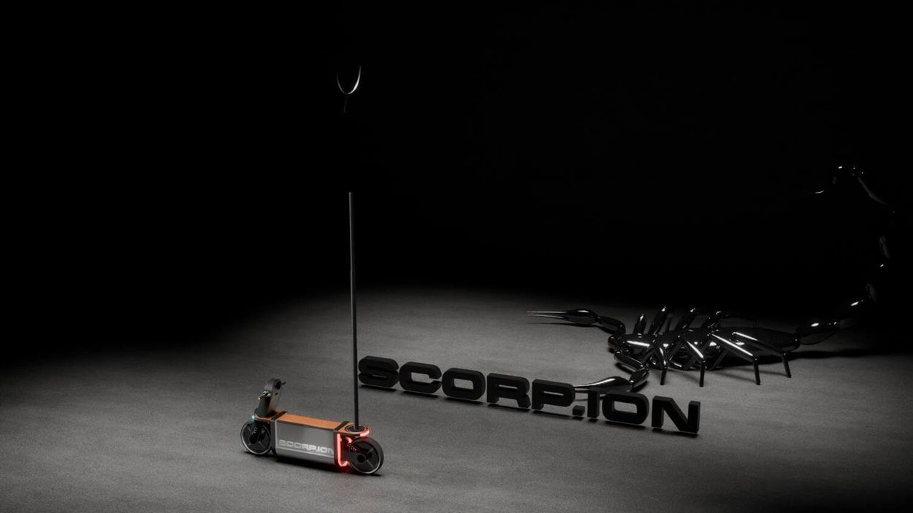
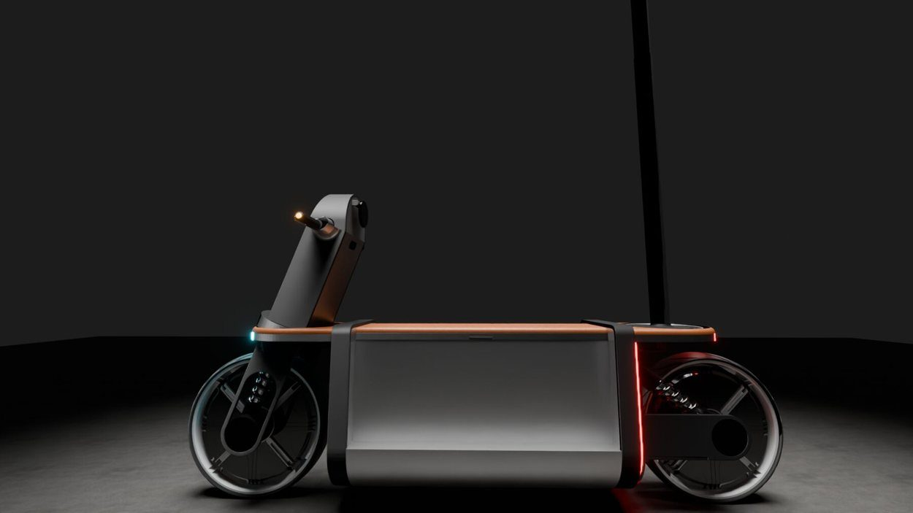
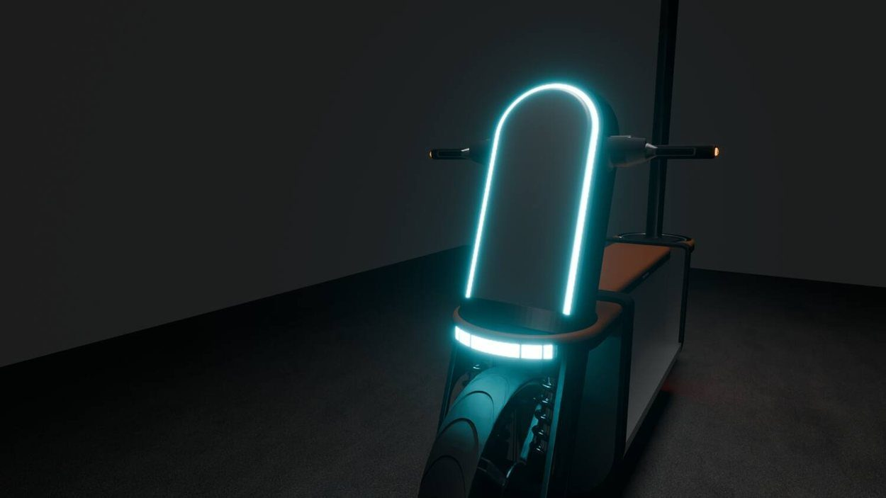
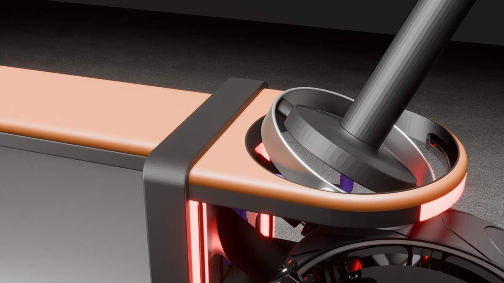
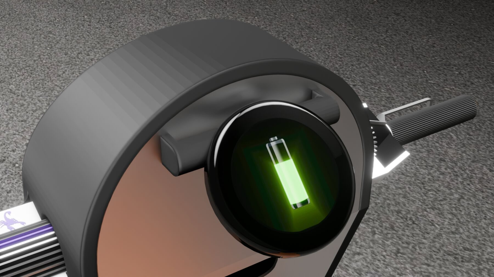
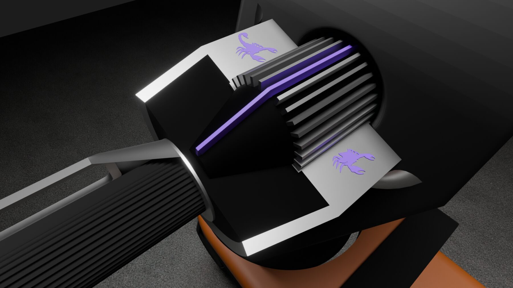
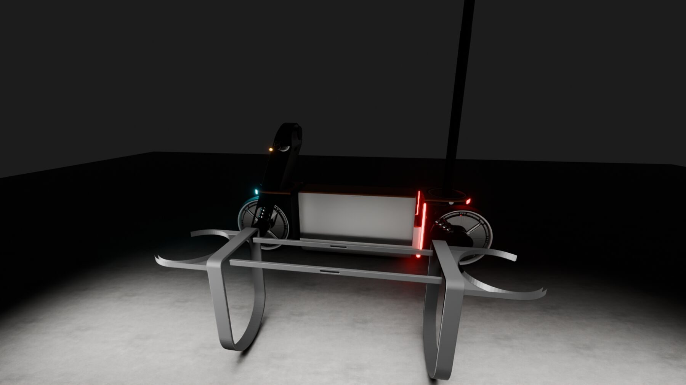

Brief
Design an urban vehicle that blends minimalist engineering with technological intelligence and becomes a sleek lifestyle object, with effortless speed and practical storage for the city.
01 / BEV moped · Transportation design
An electric moped for the city that needs no big battery: its mast connects to the tram's overhead line and draws power straight from the existing network.

Design an urban vehicle that blends minimalist engineering with technological intelligence and becomes a sleek lifestyle object, with effortless speed and practical storage for the city.
Every direction started on paper: first loose packages of seat, storage box and wheels, then a sculptural frame that wraps around the rider, and finally the link to the tram's overhead line and a charging hub.


"Combine the power of public transport with the freedom of individual mobility." Scorp.ion is my main project for the brief "Battery not included". Its guiding line: the most sustainable way to use a battery is not to use one at all.
Instead of a large battery, Scorp.ion connects to the tram's overhead line through its raised mast; a small buffer battery bridges the stretches without a line. The steel frame defines the whole design, and it gives the project its name: the scorpion returns as the logo on the handlebar switch and as the sculpture in the campaign renders.

Highlight film of the final design: Scorp.ion riding through the city under the overhead line.

A cyan ring at the front, a red band around the rear wheel as brake light and amber bar-end indicators. The same platform takes different liveries, e.g. for Berlin's BVG or food couriers.



The raised mast sits in a lit ring at the end of the seat on a flexible mount: the inner ring tilts, so the mast can follow the line while the moped moves within its lane. On the handlebar, the switch carries the scorpion logo and a small round display shows speed and the charge of the buffer battery.







